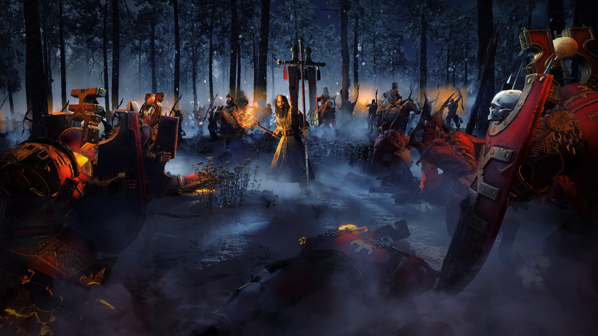
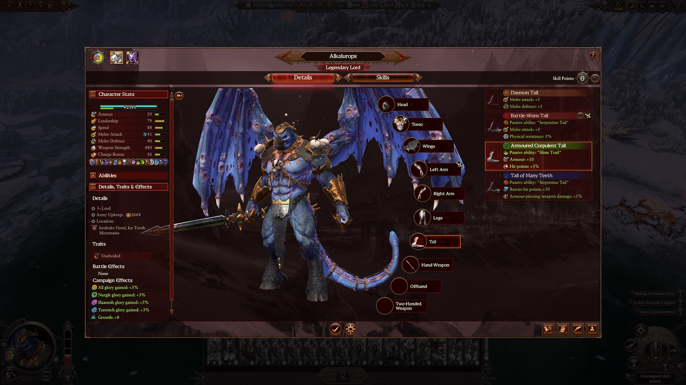
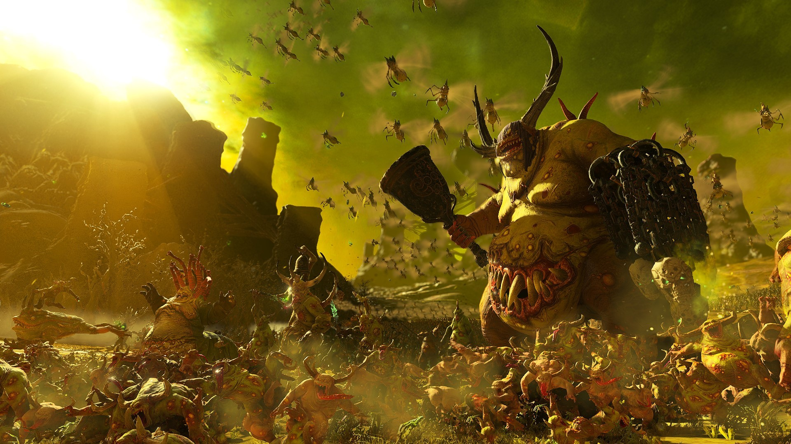
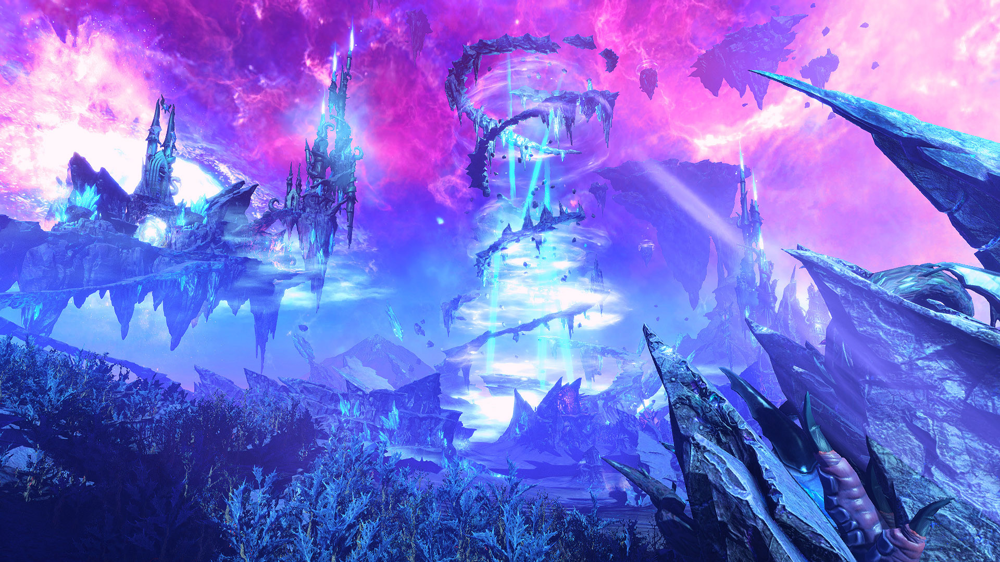
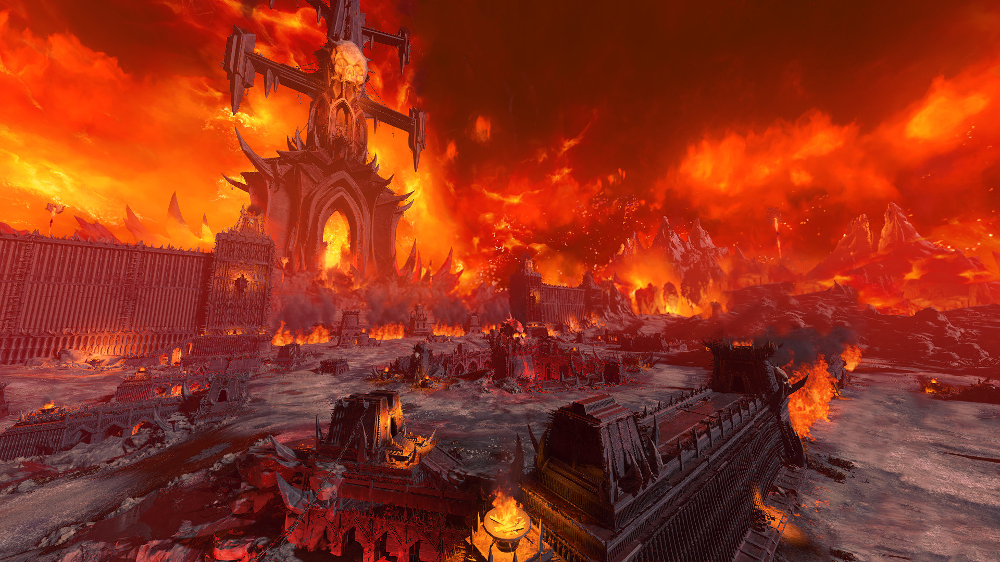

01 / BEFORE THE BATTLE战前决策：打不打，怎么打
战斗的胜负，很多时候在开打前就决定了。先看战力对比，再看援军、地形和补给，最后才决定手动还是自动。

战力对比条只能参考
战前界面会给出一个胜负预估条。它只计算数值，不考虑地形、法术、阵型、体力和操作。所以：
- 优势明显：可以自动，节省时间。但如果是关键战、攻城战、敌方有传奇领主，建议手动。
- 势均力敌：手动往往能打出更好的战损。利用地形、法术和包抄。
- 明显劣势：先想能不能不打：撤退、伏击、等援军、断补给。实在要打，就选隘口、城防或伏击地形。
开打前检查五件事
援军
敌方有没有援军？在谁的领土？援军从哪个方向来？如果你的侧翼正对援军入口，开打前就要调整阵型。
地形
山坡、森林、河流、隘口、城墙。远程站高处有射程和命中优势；森林能藏兵；隘口能让数量优势失效。
体力与弹药
强行军、爬墙、长时间追逐都会掉体力。炮兵和远程的弹药有限，别在开局就浪费在盾兵上。
法术与装备
法师带了什么法术？领主有没有治疗 / 召唤 / 范围增益？关键战前把物品和技能检查一遍。
撤退路线
打输了往哪退？会不会被追死？如果后退就是敌方主力，宁可守地形，也不要站在开阔地被包。
02 / STATS属性表：每个数字在说什么
单位面板很长，但真正影响战斗的就那十几个。先理解这些，再去看兵种排名。

| 属性 | 作用 | 怎么利用 / 怎么克制 |
|---|---|---|
| 护甲 | 按比例减免非破甲伤害，上限约 75% | 高护甲怕破甲；用火炮、火枪、大剑处理 |
| 破甲 | 无视护甲的伤害部分 | 反重甲、反巨兽的核心；看武器面板的“破甲”数值 |
| 近战攻击 | 命中率 | 高近攻适合切低近防的远程 / 法师 |
| 近战防御 | 闪避近战 | 只对近战有效；对远程无效，别拿高近防兵去送箭 |
| 冲锋加成 | 冲锋后短时间加近攻与伤害 | 骑兵 / 战车 / 巨兽冲完要拉出来再冲，不要站桩 |
| 武器威力 | 每次命中的基础伤害 | 分普通与破甲；两项都看，别只看总数 |
| 远程威力 | 每次射击的伤害 | 还要看射程、弹道、射速和命中 |
| 射程 | 开火距离 | 炮兵 > 弓箭 > 火枪；火枪短但破甲高 |
| 士气 / 领导力 | 坚持战斗的意志 | 侧翼被包、将领阵亡、友军溃逃都会掉士气；优先打崩关键单位 |
| 体力 | 疲劳度 | 奔跑、爬墙、持久战会掉；疲劳降低攻防和速度，战前别让军队强行军 |
| 物理抗性 | 减免非魔法伤害 | 用魔法攻击 / 法术对付 |
| 魔法抗性 | 减免魔法伤害 | 用普通武器对付；别把法师全砸在它身上 |
| 守护 | 全伤害减免 | 领主 / 英雄的关键生存属性，优先堆 |
| 远程格挡 | 持盾正面格挡远程 | 侧射 / 背射无视；绕后射盾兵 |
| 大型单位 | 巨兽、骑兵、战车 | 被“反大型”克制；也更容易被集火 |
不同版本可能微调公式；原则不变：破甲打重甲，反大型打巨兽，魔法打物抗，普通打魔抗。
03 / ROLES兵种角色与克制
没有无敌的兵种，只有没被针对的兵种。先记住每个角色“吃什么”，再谈配兵。

核心循环：骑兵切远程，长戟反骑兵 / 巨兽，远程磨步兵，巨兽踩步兵，法术点杀关键单位。
扛线步兵
持盾、重甲、高近防。任务是站住，不是杀敌。让它们先接敌，给远程和法师争取时间。怕破甲、怕法术、怕被包。
远程与炮兵
输出核心，但脆、怕骑兵、怕绕后。每 2–3 队远程至少配 1 队保护。炮兵射程远、破甲高，攻城时优先带。
骑兵与战车
包抄、背冲、追逃、切炮兵。冲锋后要拉出来再冲，站桩肉搏是浪费。怕长戟、怕密集阵、怕隘口。
巨兽与单体
血量高、输出集中，适合破阵和斩将。但会被长戟 / 反大型集火，别孤军深入。单体巨兽要配合步兵，别一个人冲进人堆。
长戟 / 反大型
专门处理骑兵、巨兽和战车。近防通常一般，需要后排远程支援。放在阵线两侧，专门等对面冲锋。
法师与英雄
法术是倍率器。一个吹息烧掉半队步兵，一个治疗救回前排。站位在后排，别被刺客 / 骑兵摸到。
04 / FORMATIONS四种阵型，够你用很久
阵型的唯一目的：让前排挡住、远程活着、机动能绕后。下面四种是基础模板，按地形和对手微调。
最稳的默认阵型。适合大多数情况，尤其是你不知道对面会怎么打。
怎么用：前排拉成一条线，留一点间隙让远程射击；远程放在前排后方，开启防御模式；骑兵放在两翼，先藏好，等敌方骑兵或远程暴露再动。
棋盘阵：前排交错摆放，给直射单位留射界，同时阻挡敌方冲锋。
怎么用：把前排分成两排交错，像棋盘。直射火枪 / 弩手放在间隙后方。它比线列更难被骑兵穿透，但需要手动调整，别让前排互相挡射界。
斜线阵：放弃一侧，集中兵力打穿另一侧。适合兵力少、需要快速解决战斗。
怎么用：把精锐和骑兵集中在一翼，另一翼用少量部队拖住。先打崩弱侧，再包抄敌方主力。风险是弱翼可能崩得太快，需要地形或要塞支撑。
口袋阵：中央故意后退，把敌人放进 U 形，两翼和骑兵合围。
怎么用：需要敌人主动进攻，且你有足够机动封口。中央用扛线兵拖住，两翼预先摆好，骑兵藏在后方。合围后优先打崩士气，别让敌人从缺口跑掉。
留一支预备队。把所有兵一次性压上去，赢了也只是惨胜；留 2–3 队机动，才能在侧翼崩的时候救场，或者追击时扩大战果。
05 / BATTLE FLOW战斗流程：五个阶段
战斗不是一波冲锋。它通常分成五个阶段，每个阶段的目标不同。
部署
看地形，摆阵型，藏骑兵，法师放后排。远程站高处，前排面向敌方主力，预留撤退路线。
前哨
远程开始对射，骑兵试探。优先点杀敌方炮兵、法师和轻骑兵。不要为了一个人头把阵型拉散。
接敌
前排接触，法术和范围伤害进场。用长戟接骑兵，用巨兽踩步兵，远程集火关键单位。
包抄
骑兵绕后，背冲远程和炮兵。侧翼一崩，敌方士气会连锁下降。优先打崩最弱的一翼。
追逃
溃逃单位会被追杀歼灭。用骑兵和猎犬追，别用步兵追。注意别追出阵型，被敌方预备队反打。
看士气
战锤的胜负往往不是“杀光”，而是“打崩”。斩将、背冲、侧射、包抄都能快速削士气。
骑兵 / 战车 / 巨兽冲锋后，等 3–5 秒再拉出来，让冲锋加成打满，但不要站桩肉搏。反复冲锋的伤害，远高于一直贴在敌人身上。
06 / MAGIC魔法之风：法术不是装饰
战锤 3 的魔法系统比前作更强调“资源管理”。你不是无限放法术，而是在正确的时间花掉有限的法力。

三个数字
现在能放什么
屏幕下方的魔法之风条。施法立即消耗，决定你这一刻能不能放关键法术。
还能撑多久
后备池。长时间战斗里，储量比当前值更重要；带加储量的技能 / 装备很值。
回得多快
每回合 / 每秒回复速度。受派系、地形、技能和腐蚀影响。充能高，可以打消耗战。
过载：值得赌，但别乱赌
过载会消耗更多法力强化法术，但有失败概率，失败会反噬。关键法术（关键治疗、关键吹息、关键召唤）值得赌；清杂兵不必。新手先不用过载，熟悉后再用。
法术类型
| 类型 | 作用 | 什么时候用 |
|---|---|---|
| 吹息 / 锥形 | 范围伤害，烧密集阵型 | 敌方步兵挤在一起、刚接敌时 |
| 直接伤害 | 不依赖武器伤害，稳定扣血 | 点杀高护甲巨兽、领主、炮兵 |
| 增益 | 加攻防、士气、速度、抗性 | 接敌前给前排，冲锋前给骑兵 |
| 减益 | 降攻防、士气、速度 | 敌方主力接敌前，配合包抄 |
| 治疗 | 回血、复活兵模 | 前排扛不住、领主快死时 |
| 召唤 | 临时单位 | 挡枪、偷点、拖住援军、骗法术 |
| 光环 | 持续范围效果 | 长时间站桩战、保护后排 |
法术系速查
| 法术系 | 强项 | 适合 |
|---|---|---|
| 火焰 | 范围伤害、吹息、爆发 | 清密集步兵、烧绿皮 / 鼠人 |
| 生命 | 治疗、复活、抗性 | 前排肉搏、巨兽、持久战 |
| 死亡 | 单体伤害、士气打击 | 斩将、点杀巨兽 |
| 阴影 | 减益、直接伤害、传送 | 削弱敌方主力、切后排 |
| 光明 | 增益、网、放逐 | 辅助前排、控制关键单位 |
| 野兽 | 增益、召唤、速度 | 骑兵 / 巨兽冲锋、临时挡枪 |
| 天堂 | 闪电、彗星、反大型 | 打密集阵、巨兽、炮兵 |
| 金属 | 反重甲、增益 | 打矮人、混沌勇士、重甲骑兵 |
| 冰雪（基斯里夫） | 减速、范围伤害、控制 | 拖住冲锋、保护远程 |
| 纳垢 / 吸血鬼 / 奸奇 | 持续伤害、治疗、召唤、随机效果 | 对应派系的主题玩法 |
站得太靠前，被骑兵 / 飞行单位 / 刺客摸到。法师的站位应该在前排后方、远程旁边，并且随时准备后撤。法术放完不要站在原地看戏。
07 / SIEGE攻城战：先拆塔，再进城
攻城是新手战损最高的地方。记住一句话：攻城战最大的伤害来源不是守军，是塔楼。先解决塔楼和城门，再谈占点。

进攻方：六步流程
围城，先看守军和补给
围城会切断收入、阻止补员，并让守军逐渐减员。如果守军很强，围几回合逼他出城野战，比强攻划算。
造攻城器械 / 带炮兵
有炮兵或巨兽可以直接拆墙拆塔；没有就造撞门锤和攻城塔。云梯只适合牵制，不适合主攻。
部署：主攻一个方向
选一个塔楼少、城墙矮、守军薄弱的方向主攻。其他方向放少量部队牵制，别把兵力摊薄。
拆塔 / 破门
炮兵优先点塔楼，火枪 / 弓箭压制城墙守军。撞门锤破门后，骑兵和巨兽才能进城。
占补给点
攻方占领补给点会切断守方防御补给，并摧毁附近工事。这是比杀人更快的胜利方式。
占胜利点 / 清守军
胜利点需要站住倒计时。守方可以夺回中断。留一队兵守点，主力清援军。
防守方：用补给拖死他
- 开局先建塔和路障。准备阶段建造不花时间，别等打起来才造。
- 塔楼优先建在敌军必经之路。魔法 / 爆炸塔伤害高，但贵；前期箭塔够用。
- 路障堵口，不要堵死自己的射界。平台加射程，适合放远程；陷阱放侧翼。
- 补给点要守。丢了补给点，附近工事会被摧毁，防线会连锁崩溃。
- 不要把所有兵放城墙。城墙被突破后，守军会被分割。留预备队在城内。
攻城器械速查
| 器械 | 作用 | 缺点 |
|---|---|---|
| 撞门锤 | 撞开城门，让骑兵 / 巨兽进城 | 慢，怕火和塔楼 |
| 云梯 | 步兵快速上墙 | 爬墙耗体力，无保护，容易被白打 |
| 攻城塔 | 保护步兵上墙 | 很脆，被摧毁时里面部队损失惨重 |
| 炮兵 / 巨兽 | 直接拆墙、拆塔 | 需要保护，怕骑兵 |
如果守军没有援军，围城逼降或围城打援往往比强攻更好。围几回合，守军会减员；如果敌方援军来救，你就在城外野战，避开城墙和塔楼。
08 / SURVIVAL生存战：混沌魔域的马拉松
生存战是混沌魔域战役里的特殊战斗。你要在三个区域依次占领补给点、顶住多波敌人，最后击败领域 Boss。它更像塔防 + 波次战，而不是普通遭遇战。
核心循环
占领第一个区域
清掉初始敌人，占领补给点。补给点每秒产出资源，用来建塔、路障、招募援军和买增益。
建塔，堵口
敌人会直奔占领点，常常不理旁边的塔。把塔建在必经之路，用路障把敌人堵在塔的火力范围内。
顶住波次
每波敌人会越来越多。用步兵堵口、炮兵 / 魔法塔输出，法师放范围伤害。不要把所有兵派出去追残兵。
招募援军 / 买增益
补给点也可以用来招募当前派系的单位、买治疗 / 抗性 / 魔法之风增益。关键时刻补一队兵，比多造一座塔有用。
推进到下一区域
三个区域依次推进。每推进一个区域，补给点和敌人强度都会变化。别把资源全花在第一区域。
Boss 战
最后会出现领域 Boss。提前留好补给、治疗和召唤，集中火力斩将。Boss 死后还要清掉剩余波次。
一是时间太长：一场可能 40–60 分钟，中途不能存档。开打前留足时间。二是把兵撒得太开：生存战是堵口战，不是野战。集中兵力守住补给点，比到处追敌人有效。
09 / CONTROLS & SETTINGS操作与设置：让游戏更听话
很多“操作不过来”的问题，其实是设置不对。下面这些改完，手感会明显不同。
关键设置
| 设置 | 推荐 | 原因 |
|---|---|---|
| 默认规避近战 | 关闭 | 远程被靠近会自动逃跑，阵型会散。需要时手动开。 |
| 默认防御模式 | 远程开，近战关 | 远程不会追出射程；近战能主动追击。 |
| 部队规模 | 极高（配置允许） | 影响兵模数量、法术收益和平衡，战役开始后不能改。 |
| 战斗速度 | 默认 / 慢 | 新手用慢速更容易看清战场。 |
| 慢镜头技能目标 | 开启 | 放法术时会慢放，方便瞄准。 |
| 镜头震动 | 关闭 | 减少眩晕，长时间玩更舒服。 |
| 血包 | 按喜好 | 纯视觉，不影响平衡。 |
常用操作
- 空格：暂停 / 继续（单人）。战斗中多用暂停，想清楚再下命令。
- Alt + 右键：攻击地面。炮兵和范围法术常用，能打提前量。
- Ctrl + 数字：编组。把前排、远程、骑兵分别编组，方便快速选中。
- Shift + 右键：设置路径点。让骑兵绕开前排，从侧翼走。
- 双击单位卡：选中全部同类单位（部分版本 / 设置下）。
- J：部分版本用于掉头 / 转向；以键位设置为准。
多用暂停，少用全选。暂停能让你看清每条战线；全选 A 上去，只会让阵型散掉。把前排、远程、骑兵分开编组，是微操的第一步。
10 / MISTAKES常见战斗错误
这些错误，和“兵种强弱”无关，但每一个都能让你多死几百人。
这是战锤 3 最贵的错误。全选冲锋会让前排、远程、骑兵一起往前跑，远程失去射界，骑兵撞上长戟，法师冲到最前面。正确做法是分开编组，前排先接敌，远程后置，骑兵等时机。
远程的输出来自“活着”。放在前排会被近战一冲就散。让前排先接敌，远程站在后方，直射单位留出射界，曲射单位可以放在前排后面。
骑兵的强项是侧冲、背冲和追逃，不是正面撞长戟。正面冲密集阵，冲锋加成打完就会被围死。绕后，或者等前排把敌人缠住再冲。
单体再强也怕集火。巨兽和领主需要步兵吸引火力、法师给治疗 / 增益。一个人冲进人堆，只会被长戟和远程集火。
炮兵射程远、伤害高，但一旦被骑兵 / 飞行单位摸到，基本白给。至少留 1–2 队步兵或骑兵保护炮兵，或者把炮兵放在阵线内侧。
溃逃的敌人很诱人，但追出去会让你的阵型出现大洞。用骑兵追，不要用步兵；追到一半就回来，防止敌方预备队反打。
法师的站位比法术本身更重要。放在前排后方、远程旁边，随时准备后撤。放完法术不要站在原地看戏。
奔跑、爬墙、长时间战斗都会掉体力。疲劳会降低攻防和速度，甚至影响士气。接敌前让部队走，不要一路跑；爬墙前想清楚值不值。
爬墙会严重消耗体力，还会被塔楼和守军白打。没有炮兵 / 巨兽拆墙时，先造撞门锤和攻城塔，或者围城逼降。
自动战斗只看数值，经常给你“惨胜”。关键战、攻城战、以少打多，手动往往能打出完全不同的结果。输了再读档，也比自动送掉精锐强。
知道怎么打之后，下一步是“用谁打”。派系篇把 25 个种族的难度、玩法、推荐领主和开局建议整理成可筛选的卡片。进入派系篇 →